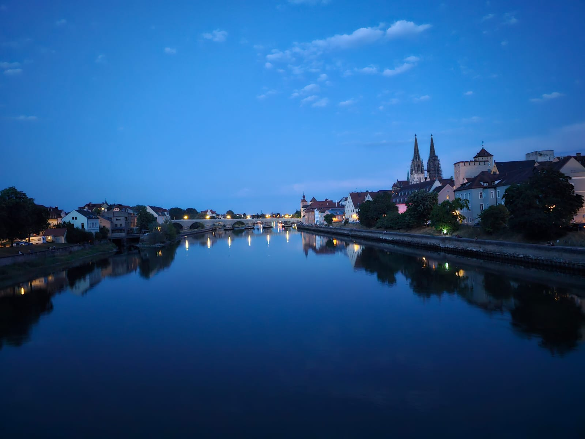

Fahrt von Hamburg über den Brenner und das Penser Joch nach Italien
Mit dem Käfer einmal nach Italien, eine Tour über den alten Brenner-Pass, das war schon lange ein Traum von mir.
Gemütlich über die Landstraßen gondeln, von Stadt zu Stadt und sich die Natur und Orte anschauen.
Denn Autobahn mit einem Käfer, das macht keinen Sinn. Beim schnelleren Fahren als mit 100 km/h, da ist der Käfer dann schon sehr laut.
Auch das Lenken, vorausschauend Fahren und Bremsen wird dann anstrengender. Das ist für den Fahrer auf Dauer nicht wirklich eine
Erholung.
Und so haben ein Freund und ich uns eine Strecke über die Landstraßen grob rausgesucht.
Zimmer zur Übernachtung wollten wir uns dann jeweils spontan suchen.

Aussicht vom Penser Joch aus
Tag 1 - 10.07.2023
Da mein Beifahrer sehr groß ist machte er sich als er das erste Mal in den Käfer einsteigen wollte Gedanken darüber ob seine langen Beine überhaupt Platz finden würden. Ihr müsst euch das so vorstellen: niedrige Sitze, man sackt praktisch nach hinten ein und seine Knie waren viel höher als gewohnt. Nach etwa drei bis vier Stunden Fahrt spürte er langsam sein Rücken. Aber nach einer Pause mit Currywurst, in einem urigen Imbiss, ging es wieder besser. Die Imbiss-Besitzerin bemerkte: "Wow, so ein Auto hatte ich auch mal!". Ein paar Leute auf der Landstraße winkten einfach als wir unterwegs waren zwischen Soltau, Zelle, Braunschweig bis nach Goslar.

Platz vor dem Hotel, in dem wir übernachtet haben.

Sicht von der Straß aus,
die vor dem Platz ist.
die vor dem Platz ist.

Marktkirche St. Cosmas
und Damian in Goslar
und Damian in Goslar
Tag 2 - 11.07.2023
Im Harz, es tauchten viele Gedanken in meinem Kopf auf. Ein bedrückendes Bild von abgeholzten Bäumen und den Umweltschäden prägt sich ein. Hat sich das Klima sich so stark verändert, dass zahlreiche höher gelegene Kiefern nun ohne Nadeln dastehen? Es wirkt wie eine verlassene Landschaft. Weiter unten ist dagegen noch fast alles grün. Auf dem Weg Richtung Kassel, die Frontscheibe ist so nah, man schwitzt, aber wegen der kleinen Dreiecksfenster in den Türen, die während der ganzen Fahrt offen waren, ist es trotzdem eine angenehme Wärme im Käfer. Die Fahrt zum Hotel im Knüll- Gebirge (bei Kassel) verläuft zwar langsam, aber es ist faszinierend zu beobachten, wie sich alles entschleunigt. dort angekommen trafen wir einen unterhaltsamen Mann beim Hotel. Er interessierte sich dafür, welchen Käfer-Typ wir da fuhren. Denn er habe zuhause noch viele Ersatzteile, die er nicht mehr benötigte.
Tag 3 - 12.07.2023
Es gibt viele Staus auf den Straßen und alles scheint ziemlich chaotisch zu sein. Besonders im Übergangsbereich von Hessen nach Franken ist der Verkehr sehr stark. In den kleinen Städten passen oft nur zwei bis drei Autos oder LKWs über die rote Ampel, was sehr viel Zeit kostet. Wenn man bedenkt, dass es ungefähr noch 300 Kilometer bis nach Nürnberg sind, erinnerte sich mein Beifahrer, ist der Verkehr hier fast wie in Mumbai. Historisch gesehen passt das Auto nach Nürnberg, da diese Stadt so alt ist. Die Parkgarage des Hotels ist ein Kapitel für sich – dort hat man links und rechts nur zehn Zentimeter Platz zwischen den Pfeilern. Wer mit einem SUV zum Hotel kommen möchte sollte sich auf sehr enge Platzverhältnisse einstellen.

Die Lorenzkirche
in Nürnberg
in Nürnberg

Nassauer Haus
in Nürnberg
in Nürnberg

Der enge Stellplatz
in der Hotelgarage
in der Hotelgarage
Tag 4 - 13.07.2023
Nürnberg heute Morgen in der Parkgarage, war es eine Herausforderung wieder herauszukommen. In der Fußgängerzone herrschte viel Trubel, es war schwer zu unterscheiden was Straße und was Fußgängerweg ist. Denn Fußweg und Straße sind aus dem gleichen Pflaster. Und die vielen Leute darauf machten das nicht übersichtlicher. Aber letztendlich fand sich alles. Insgesamt war der Tag relativ entspannt: Die Bremsen wurden nicht heiß, die Temperaturen waren angenehm und der Motor lief ruhig. Dann passierte es, die Navigations-App zeigte das auf dem Weg nach Garmisch-Partenkirchen ein Stück der Straße gesperrt war. Auf der Bundesstraße bei Oberammergau gab es Bauarbeiten. Also entschieden wir uns kurz vor der Baustelle in den Ort abzubiegen. Auf sehr malerischen Schleichwegen, idyllisch zwischen den Bergen und entlang eines Baches weiter zu fahren. Es war eine Mischung aus Radweg und Autostraße, was nicht immer klar zu erkennen war. Aber letztendlich führte uns dieser Weg erfolgreich nach Garmisch. Aber Garmisch ist ziemlich teuer. Kurzfristig war für unsere Verhältnisse kein bezahlbares Zimmer zu finden. Aber gut, es ist das Tor zum Brenner und letztendlich nach Italien. Aber 7 km weiter, in Grainau hatten wir jedoch Glück und fanden noch eine nicht ganz fertige Ferienwohnung. Die Küche war noch nicht eingerichtet, aber wir konnten die Wohnung als Doppelzimmer zu einem annehmbaren Preis mieten. Abends in Grainau spazierten noch einen keines Stück, um einen besseren Blick auf die Zugspitze zu bekommen. Im Sonnenuntergang erschien der Berg in einem schönen rötlichen Licht.
Tag 5 - 14.07.2023
Weiter ging es von Grainau bei Garmisch-Partenkirchen über den Brenner nach Bozen. In Innsbruck begann das ganze Rätsel: Wie komme ich eigentlich über den Brenner auf der alten Passstraße? Ich glaube, wir haben drei Anläufe gebraucht, um die richtige Straße zu finden. Am Ende klappte es zwar, aber es endete zweimal im Chaos kurz bevor die Landstraße Richtung Brenner führte. Interessanterweise gaben die Navigationssysteme auf. Sie rieten uns die Autobahn zu nehmen, aber das war nicht unser Plan. Stattdessen wollten wir die alte Pass-Straße nehmen. Fuhren aber wegen einer Baustelle über kleine, knifflige Nebenwege und erreichten schließlich den Brenner-Pass. Von dort ging es weiter über eine völlig normale Landstraße. Ab da verlief auch ein Fluss weiter rechts neben der Strecke entlang. Und auf der anderen Fluss-Seite gab es eine weitere Straße. Vielleicht hätten wir die Landstraße nehmen sollen, aber trotz allem gelang es uns über den Brenner zu fahren. Nach dem Brenner ging es weiter zum Penser Joch, das uns auf 2200 Meter Höhe brachte. Das Auto hatte hier ordentlich zu tun und konnte teilweise nur mit 30 km/h fahren. In den Kurven gab es leichte Schwierigkeiten mit der Gangwahl und manchmal hätten wir einen zweiten dritten Gang gebraucht. Trotzdem kamen wir gut rauf, auch wenn das Auto ein wenig geächzt hatte. Oben angekommen roch es bei einer Gaststätte etwas nach verbrannter Kupplung und die Bremsen waren offenbar stark beansprucht worden. Nach einem Mittagsessen in der Gaststätte ging es weiter Richtung Bozen. Eine wunderschöne Strecke von 87 Kilometern. Die Navigationssysteme gaben auf, zeigten aber brav an, dass es nur 30 Minuten dauern würde. Am Ende dauerte es anderthalb Stunden. Die Navigationssysteme funktionierten insgesamt nicht zuverlässig, was nicht schön ist, wenn man sich darauf verlassen will. Das Satellitensignal ist manchmal zu schwach. Dann ist man wirklich aufgeschmissen, wenn man nicht manuell in den Karten der App die Route suchen kann. Und sich wie früher sich anhand der Karten von Ort zu Ort hangeln kann.
Unser Hotel in Bozen war letztlich in einem Industriehinterhof. Aber für eine Nacht war das völlig in Ordnung. Zum Abendessen machten wir noch einen Abstecher in die Altstadt von Bozen.

Fahrt von Garmisch-
Partenkirchen
nach Innsbruch
Partenkirchen
nach Innsbruch

Auf der B177,
in Österreich,
Richtung Innsbruch
in Österreich,
Richtung Innsbruch

Der Käfer hat es geschafft!

Straße zum Penser Joch rauf
Straße runter
Tag 6 - 15.07.2023
Bei der Rückfahrt über den Brennerpass war das zeitweise aussetzen des GPS-Empfangs kein Problem. Wir kannten ja den Weg. Der Motor lief und lief ... So ging es zum Chiemsee. Wo sich die Zimmersuche als ziemlich chaotisch gestaltete, da alles ausgebucht war. Es wurde viel hin und her telefoniert, aber letztendlich fanden wir doch noch eine Unterkunft. Das kleine Zimmer war für eine Nacht ausreichend. Abends am Chiemsee, besuchten wir eine kleine öffentliche Feier, mit Live- Band. Und genossen den Sonnenuntergang bei einem Getränk.
Tag 7 - 16.07.2023
Wir fuhren weiter in Richtung Rechbergring, ca. 40 km südlich von Ulm. Um zehn Uhr wollten wir bei Andie vorbeischauen, Brötchen mitbringen und ein wenig beim Internetradio vom Andie zuschauen. Mein Mitfahrer kennt ihn schon seit sechs oder sieben Jahren. Es war allerdings etwas erschreckend das Studio zu sehen, es befand sich in einer Ecke des Wohnzimmers. Das war an sich nicht schlimm, aber sauber war das Zimmer nicht wirklich. Nach dem Besuch ging es weiter nach München. Dort haben wir ein kleines Mittagessen genossen und einen kurzen Abstecher in den Englischen Garten unternommen. Es war heute einfach nur warm, warm, warm – mit 30 Grad Höchsttemperatur am Tag. Ziemlich erschöpft fuhren wir aber dennoch weiter über die Landstraßen nach Regensburg und dann direkt zum Hotel. Nach einer längeren Pause, sind wir zum Abendessen in die Altstadt von Regensburg gefahren. Später saßen wir noch an der Donau und genossen das Panorama bei Nacht.

Isar in München

Donau in Regensburg
Tag 8 - 17.07.2023
Also, die Reise geht weiter – aber in welche Richtung? Es geht von Regensburg nach Berlin. Ursprünglich wollten wir jedoch einen Zwischenstopp in Leipzig einlegen. Aber ja, Leipzig… Was gibt es da Schönes? Abgesehen von der Leipziger Herbstmesse fällt mir da nicht viel ein. Die Fahrt bestand aus vielen Kilometern Autobahn, die teilweise durch Vollsperrungen unterbrochen war. Deshalb ging es oft über Landstraßen. Diese Strecken führten durch verschiedene Dörfer was viel interessanter war als einfach nur auf der Autobahn dahin zu dümpeln. Durch die Dörfer ging es recht zügig voran bis wir vor Berlin erneut in eine Vollsperrung gerieten. Für mich war es spannend nach Berlin hineinzufahren und zu sehen wie grün es dort plötzlich wird. Viele Wälder säumen den Anfang der Stadt. Ich erinnere mich nicht mehr genau an die Orte durch die wir kamen, aber das spielt auch keine Rolle. Berlin ist grün und einige Stadtteile geprägt von Villenbebauung. Wir fuhren von einem Hotel zum nächsten, bis wir schließlich etwas Bezahlbares fanden. Schließlich kamen wir in Wilmersdorf an und checkten im Hotel ein. Am Nachmittag gingen wir in die Innenstadt, wollten das Pergamonmuseum besuchen. Denn das sollte bald wegen einer Renovierung für ca. 15 Jahre lang geschlossen werden. Doch leider waren alle Termine für diesen Tag ausgebucht und so blieb uns nur Tickets für den nächsten Tag zu reservieren. Um die Zeit zu überbrücken entschieden wir uns für eine klassische Stadtrundfahrt mit der Buslinie 100. Sie führte an vielen Sehenswürdigkeiten vorbei, von Unter den Linden bis zum Zoologischen Garten. Nach der Tour war ein Essen genau das Richtige für uns. So gestärkt besuchten wir Anschließend die Gedenkstätte Berlin-Hohenschönhausen, das ehemalige Stasi-Gefängnis. Dort nahmen wir an einer Führung teil, bei der die psychische Gewalt thematisiert wurde, die den Häftlingen dort widerfahren ist. Es war ein eindrucksvolles Erlebnis.
Tag 9 - 18.07.2023
Ein Tag später besuchten wir dann das Pergamonmuseum. Es war interessant aber auch anstrengend die ganze Zeit in dem Museum herumzulaufen. Ja, und dann kam die Rückfahrt nach Hamburg. Wir waren ziemlich geschafft und wollten nur noch nach Hause, daher nahmen wir die Autobahn. Das schien uns am einfachsten, was sich aber später als Trugschluss herausstellte. Durch einen Unfall wurde die Autobahn gesperrt und so waren wir gezwungen auf einem Rastplatz eine Zwangspause einzulegen. Nach einiger Zeit wurde der Verkehr über die nächste Abfahrt von der Autobahn auf die Bundesstraße umgeleitet. Wo man aber auch nicht wirklich gut vorankam. Was uns dazu bewog auf ganz kleine Nebenstraßen auszuweichen. War im Endeffekt auch nicht schneller, aber man hatte kein Stopp-and-go mehr und man sieht mehr von der Umgebung. Obwohl nach kurzer Zeit kam ein Wolkenbruch, da war nichts mehr mit guter Sicht. Die kleinen Scheibenwischer des Käfers schafften es kaum die Scheibe freizuhalten. So ging es dann Richtung Hamburg.

Käfer im Regen

Auf der
Nebenstraße
Nebenstraße

Richtung Hamburg